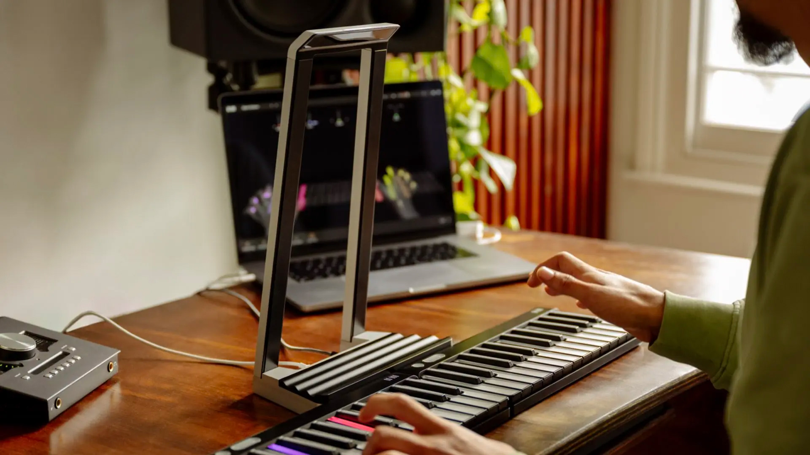

The first synthesiser that turns hand gestures in the air into expressive sound.

Overview
ROLI Airwave is a hand-tracking musical instrument - the first synthesiser of its kind to let you shape sound from gestures in the air. An infrared stereo camera (via the Ultraleap/Leap Motion SDK) and computer vision model each hand as 27 joints in 3D space, translating gestures into expressive control over the sound engine. Our focus was on minimising the latency of turning those 3D hand frames into audio. Architecturally, we split the application into a hand-tracking service that generates MIDI data and a synthesiser plugin that consumes it for sound generation, with ZeroMQ handling communication between the two. Built for Mac, Windows, and iOS.
[img:1]
What I worked on
On ROLI Airwave I translated hand gestures into MIDI CCs and MPE control — as well as iOS support, DSP optimisation, and third-party integrations with Yamaha products.